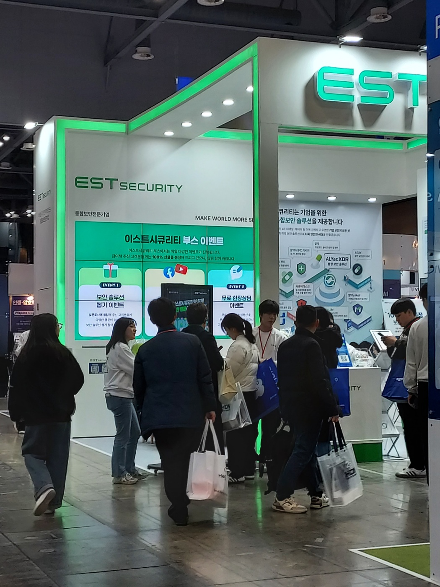
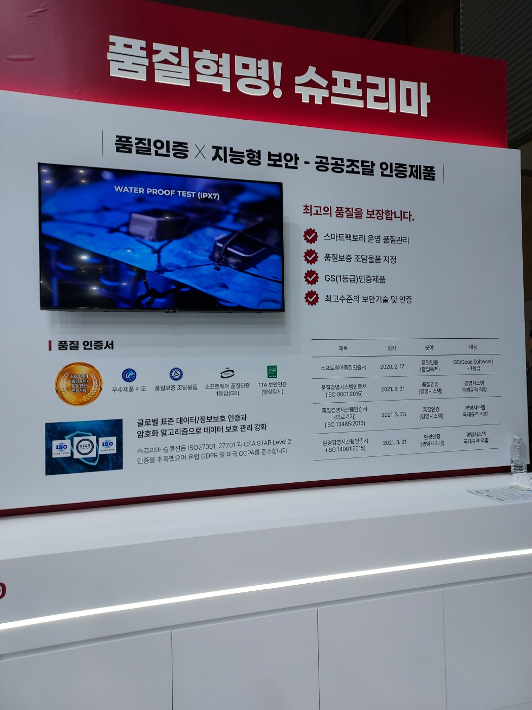

Info of SECON
homepage :
Secon's main page
When : 2025. 3. 19 ~ 2025. 3. 21
Where : KINTEX (Korea International Exhibition Center), Korea
SECON은 물리적 및 사이버 보안 솔루션을 한 곳에서 경험할 수 있는 아시아
최대 규모의 통합 보안 전시회이다.
ESTsecurity
이스트 시큐리티는 알약을 개발한 회사이다.
랜섬웨어 관련된 보안 솔루션이 인상적이였다.
최근 랜섬웨어나 APT 공격이 점점 많아지고 있다. ESTsecurity의 보안
솔루션은 국내 기업들의 대응력을 높여줄 수 있다고 생각되었다.
사이버 보안 전문가를 꿈꾸는 입장에서 실제 기술을 보고 접할 수 있었던
점이 유익했고, EDR 기술에 대해 더 깊이 공부해보고 싶은 동기가
되었다.
직접 참가할수 있는 행사가 있어 더욱 몰입감 있는 부스
체험이였던것같다.

What I felt
작년 SECON에 이어 올해도 참가하게 되었다.
작년에는 아는 지식이 부족해 구경정도에 그쳤다면, 올해는 조금 더 관심을
가지고 볼수 있었다.
다양한 기업들이 부스를 운영하고 있었고, 그 중에서도 물리 보안, 보안
관제와 관련된 부스가 많았던것같다.
특히, ESTsecurity 부스가 가장 기억에 남았던것같다.
앞으로 이런 보안 제품과 관련된 컨퍼런스가 아닌, 기술이나 최신 동향과
관련된 컨퍼런스도 참가할 의욕이 생겼다.
작년에 비해 참 많은걸 얻어간것같다.
